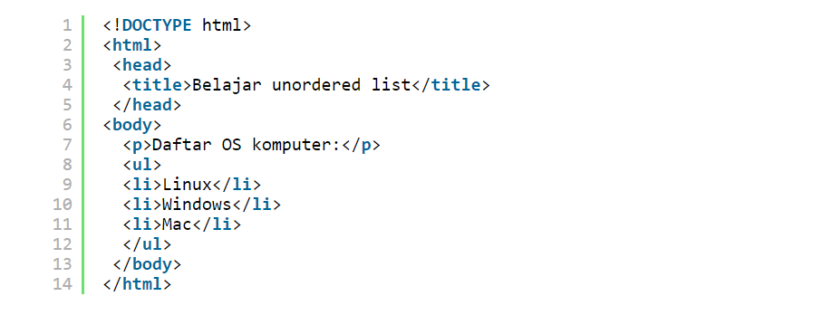

UNORDERED LIST
Pengertian & Penggunaan Unordered List

Pengertian Unordered List
Unordered list adalah jenis list yang tidak berurutan yang ditampilkan dengan menggunakan simbol.
Unordered list digunakan untuk menampilkan daftar list yang tidak memerlukan angka pengurutan misalnya daftar OS komputer, daftar aplikasi editor html dan lain-lain.
Cara Membuat Unordered List
Unordered list atau list simbol dibuat dengan menggunakan tag ul. Sama dengan list sebelumnya, item-item list ini ditulis dengan menggunakan tag li yang terletak di dalam elemen ul.
Contoh penggunaan Unordered List pada :
Nama-Nama Provinsi Di Indonesia
- Nanggroe Aceh Darussalam (Ibu Kota Banda Aceh)
- Sumatera Utara (Ibu Kota Medan)
- Sumatera Selatan (Ibu Kota Palembang)
- Sumatera Barat (Ibu Kota Padang)
- Bengkulu (Ibu Kota Bengkulu)
- Riau (Ibu Kota Pekanbaru)
- Kepulauan Riau (Ibu Kota Tanjung Pinang)
- Jambi (Ibu Kota Jambi)
- Lampung (Ibu Kota Bandar Lampung)
- Bangka Belitung (Ibu Kota Pangkal Pinang)
- Kalimantan Barat (Ibu Kota Pontianak)
- Kalimantan Timur (Ibu Kota Samarinda)
- Kalimantan Selatan (Ibu Kota Banjarbaru)
- Kalimantan Tengah (Ibu Kota Palangkaraya)
- Kalimantan Utara (Ibu Kota Tanjung Selor)
- Banten (Ibu Kota Serang)
- DKI Jakarta (Ibu Kota Jakarta)
- Jawa Barat (Ibu Kota Bandung)
- Jawa Tengah (Ibu Kota Semarang)
- Daerah Istimewa Yogyakarta (Ibu Kota Yogyakarta)
- Jawa Timur (Ibu Kota Surabaya)
- Bali (Ibu Kota Denpasar)
- Nusa Tenggara Timur (Ibu Kota Kupang)
- Nusa Tenggara Barat (Ibu Kota Mataram)
- Gorontalo (Ibu Kota Gorontalo)
- Sulawesi Barat (Ibu Kota Mamuju)
- Sulawesi Tengah (Ibu Kota Palu)
- Sulawesi Utara (Ibu Kota Manado)
- Sulawesi Tenggara (Ibu Kota Kendari)
- Sulawesi Selatan (Ibu Kota Makassar)
- Maluku Utara (Ibu Kota Sofifi)
- Maluku (Ibu Kota Ambon)
- Papua Barat (Ibu Kota Manokwari)
- Papua (Ibu Kota Jayapura)
- Papua Tengah (Ibu Kota Nabire)
- Papua Pegunungan (Ibu Kota Jayawijaya)
- Papua Selatan (Ibu Kota Merauke)
- Papua Barat Daya (Ibu Kota Sorong)